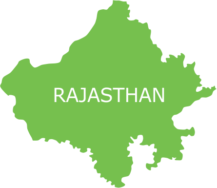

Rajasthan
Description of the state
- Rajasthan;literally, "Land of Kings") is a state in northern India. The state covers an area of 342,239 square kilometres (132,139 sq mi) or 10.4 percent of the total geographical area of India. It is the largest Indian state by area and the seventh largest by population.
- Rajasthan is located on the northwestern side of India, where it comprises most of the wide and inhospitable Thar Desert (also known as the "Rajasthan Desert" and "Great Indian Desert") and shares a border with the Pakistani provinces of Punjab to the northwest and Sindh to the west, along the Sutlej-Indus river valley.
- Elsewhere it is bordered by five other Indian states: Punjab to the north; Haryana and Uttar Pradesh to the northeast; Madhya Pradesh to the southeast; and Gujarat to the southwest.
- Major features include the ruins of the Indus Valley Civilisation at Kalibanga; the Dilwara Temples, a Jain pilgrimage site at Rajasthan's only hill station, Mount Abu, in the ancient Aravalli mountain range; and, in eastern Rajasthan, the Keoladeo National Park near Bharatpur, a World Heritage Site known for its bird life.
- Rajasthan is also home to three national tiger reserves, the Ranthambore National Park in Sawai Madhopur, Sariska Tiger Reserve in Alwar and Mukundra Hill Tiger Reserve in Kota.